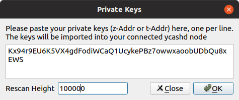
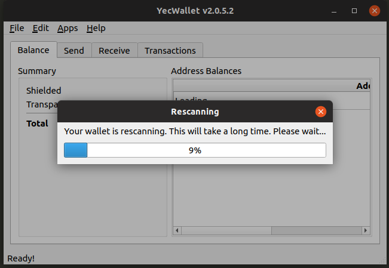

Importing Private Keys
Importing Private Keys into Ycash
Importing private keys, both transparent and shielded, is easier than ever. From the RPC, you can use importprivkey for transparent addresses and z_importkey for shielded addresses.
startHeight
When you import a new private key into Ycash, ycashd needs to rescan the blockchain from the genisis block to check for transactions that belong to the key. This process is called "rescanning" and can sometimes take hours.
However, you can speed up the rescan if you, for example, are confident that there are no transactions for a private key before block 400000, you can specify block 400000 as the startHeight parameter, significantly speeding up the rescan.
Both RPC calls accept an optional startHeight parameter that specifies from what block height to start scanning for transactions.
getrescaninfo RPC
Ycash 2.0.6 adds a new RPC call getrescaninfo that will return the current status and progress of the rescan, if one is in progress. You can use this RPC call to keep tabs on how the import key is proceeding.
$ ./ycash-cli getrescaninfo
{
"rescanning": true,
"rescanprogress": 28.64112387348676
}
YecWallet
Both the startHeight and the rescan progress can be tracked from YecWallet. When you import a private key in YecWallet, you can specify the optional startHeight parameter.

After the key import has started, you will also see a progress dialog showing the progress of the import.
